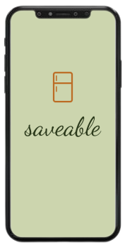

Savable
A smart fridge app to help reduce waste
My Role(s)
UX/UI Designer
External Links
Figma Protoype
Introduction
Savable is an app that connects to your smart fridge to help you utilize your groceries more efficiently and help to reduce waste. There are two parts to this
project: a smart fridge, and the corresponding phone application.
This project utilizes the Double-Diamond method, in which there are four main stages of a project's design process. The Discover stage is where we gather insights
into the project. The Define stage is where we refine our research and identify the project scope. The Develop stage is where we design possible solutions for the
problem scope. Finally, the Deliver stage is where we propose the finalized designs.

The Double Diamond Method. Image from Medium.
Discover
Problem Statement
How might we encourage households to make better use of the food they have by monitoring perishables using weight sensors and cameras in a smart fridge to control food waste?
Research Insight Infographic

Infographic that shows the research I've done
Define
User Empathy Map
User Empathy Map - Center image from Unsplash
Pains: Can’t change expiration date when scanning item. Doesn’t know which ingredients are in fridge when viewing recipes.
Gains: Always knows what’s in fridge. Grocery trips are faster. Producing green waste instead of contributing to landfills.
Smart Environment Sketches

Low-fidelity sketches of smart fridge environment
Low-fidelity sketches of smart fridge app
Develop
System Flow Chart
System Flow Chart of smart fridge
Smart Environment Visualization
Fridge contains cameras to show items that are hard to see. It is also used to keep track of what items are being taken out and put back in.
Each shelf has weight sensors that act as a digital scale to weigh products. As items are being used, its weight goes down. When the weight of an
item reaches a certain point, the fridge notifies the user via phone of an item running out.
Data from the fridge is stored in the cloud and can be accessed with a phone.
When items expire, users can throw it in the compost bin to produce green waste as an alternative. Light on compost bin alerts users if it’s full.
You can view the Figma prototype of the corresponding phone app at the top of this page, or through here.
References
“Food Waste in America in 2021: Statistics & Facts.” Recycle Track Systems (RTS), 2021.
Schanes, Karin, et al. “Food Waste Matters - a Systematic Review of Household Food Waste
Practices and Their Policy Implications.” Journal of Cleaner Production, vol. 182, 2018, pp. 978–991., https://doi.org/10.1016/j.jclepro.2018.02.030.
Londre, Romi. “7 Ways to Reduce Food Waste.” Mayo Clinic Health System, Mayo Clinic
Health System, 4 June 2021, https://www.mayoclinichealthsystem.org/hometown-he alth/speaking-of-health/7-ways-to-reduce-food-waste-in-your-kitchen.
Wells, Hodan Farah, et al. “The Estimated Amount, Value, and Calories of Postharvest Food
Losses at the Retail and Consumer Levels in the United States.” Economic Research Service, U.S. Department of Agriculture, Feb. 2014, https://www.ers.usda.gov/publicati ons/pub-details/?pubid=43836.
Aditi Kisara